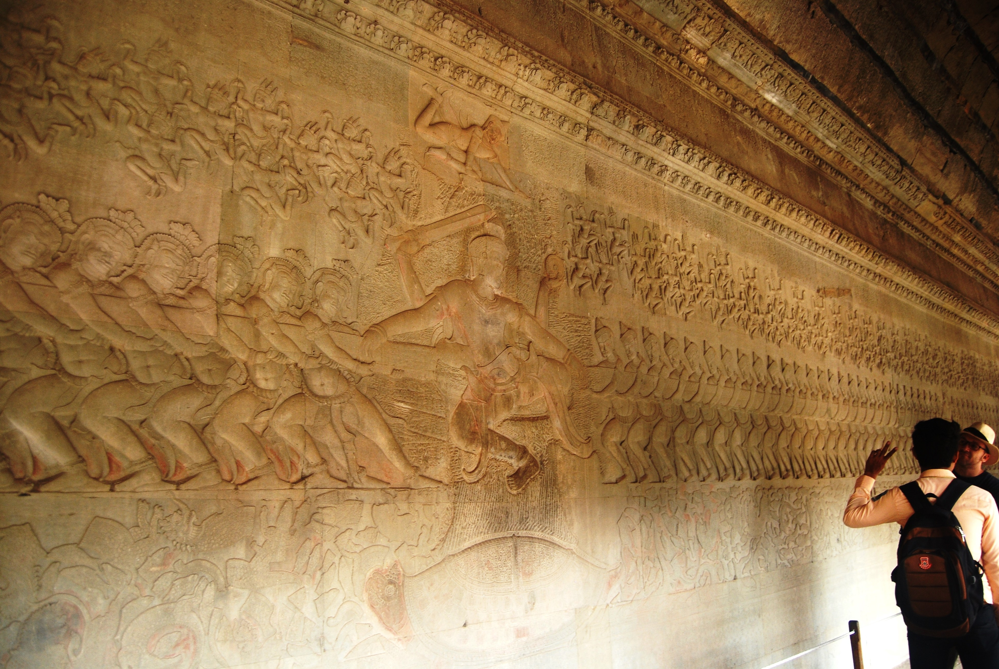

សាសន៍ដទៃដែលស្គាល់ប្រទេសកម្ពុជា តែងតែនិយាយពីប្រាសាទអង្គរវត្ត ។ ប្រាសាទនេះជាបេតិកភណ្ឌពិភពលោកមួយ ហើយក៏ជាវិមានសាសនាធំជាងគេបំផុតលើពិភពលោក ។ ថ្វីត្បិតតែស្ថិតក្នុងព្រៃបៃតងប្រណិត និង ក្នុងចំណោមប្រាសាទស្អាតៗជាច្រើនទៀតក្នុងតំបន់អង្គរ ប្រាសាទអង្គរស្អាតដាច់គេនៅក្នុងតំបន់ និង ជាភស្ដុតាងនៃវិចិត្រកម្ម និង ស្ថាបត្យកម្មដ៏កំពូលរបស់ខ្មែរជំនាន់ដើម ។
ប្រាសាទអង្គរវត្តត្រូវបានចាប់ផ្ដើមសាងសង់ឡើងក្នុងរាជព្រះបាទសូរ្យវរ្ម័នទី២ (គ.ស. ១១១៣ - គ.ស. ១១៥០) ។ ប្រាសាទនេះកសាងឡើងសម្រាប់ឧទ្ទិសដល់ព្រះវិស្ណុ ហើយបែរមុខទៅទិសខាងលិច ដែលនាំឲ្យប្រវត្តិវិទូជាច្រើនសន្និដ្ឋានថាគោលបំណងសាងសង់ប្រាសាទនេះគឺរំឭកដល់វិញ្ញាណក្ខន្ធព្រះបាទសូរ្យវរ្ម័នទី២ ។ ប្រាសាទនេះមានគូទឹកព័ទ្ធជុំវិញ មាននាទីជាប្រភពទឹកផង រារាំងព្រៃឈើកុំឲ្យដុះរាលចូលប្រាសាទផង និង ការពារពីការឈ្លានពានពីសត្រូវផង ។ ក្នុងប្រាសាទ មានព្រះសង្ឃរស់នៅ ហើយក៏ធ្លាប់ជាកន្លែងជម្រកបណ្ដោះអាសន្នរបស់ប្រជាជននៅសម័យសង្គ្រាមផង ។
លក្ខណៈពិសេសរបស់ប្រាសាទអង្គរវត្ត គឺចម្លាក់ថែវលើជញ្ជាំងប្រាសាទ ។ ចម្លាក់ទាំងនេះបង្ហាញពីនិទានកថា និង ទេវកថាព្រហ្មញ្ញសាសនា ពីព្រះបាទសូរ្យវរ្ម័នទី២ និង ជាសិលាចារិក ។
© បង្កើត និង តែងដោយ
រចនាបទ & អភិវឌ្ឍដោយ ដើរលេងសៀមរាប